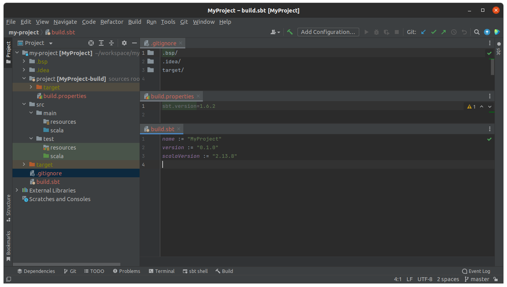

Setting Up a Scala Project With Sbt
( 6 min read )
How do you start your brand new Scala projects with sbt?
Here’s what I do:
mkdir my-project && cd $_
git init
echo '.bsp/
.idea/
target/' > .gitignore
mkdir -p src/{main,test}/{scala,resources} project
echo 'sbt.version=1.6.2' > ./project/build.properties
echo 'name := "MyProject"
version := "0.1.0"
scalaVersion := "2.13.8"' > build.sbt
idea .This creates a compile-able Scala project and opens it with IntelliJ IDEA.

Its lightning fast, and doesn’t prompt for questions or walk through any “new project” wizard.
- Want a different Scala or sbt version? Easy, just edit the version.
- Want
src/java/folders? Easy, add them to themkdirline. - Want Vim, Atom, or another editor, instead of IntelliJ? Easy, peazy.
Finally, it does not assume any plugins/dependencies, and does not give you boilerplate code either (that you have to delete anyway). But hey, if you wanted those things, its pretty clear what to do.
Why not use ‘sbt new’?
There’s also this command to generate a new project:
sbt new sbt/scala-seed.g8It prompts for a project name and creates a folder with that name. Then it downloads a template from GitHub for you with a build.sbt file, build.properties file, a main class, and a test class. Neat!
But wait, it sets up a project with 4 year old versions of
scala 2.12.8 and sbt 1.2.7. Huh. that’s kindof annoying for a template to
be outdated. Why didn’t it prompt be for versions to use like it did for the project name to use?
After looking around online, I guess what we actually meant to use was:
sbt new scala/scala-seed.g8Ah ok, so that’s the up-to-date template right?
Well this one uses the more recent scala 2.13.7 and the latest sbt 1.6.2.
So that’s better. Only this time
we have some strange choices made for you in what consists of a “new” scala
project. For example the build has to import Dependencies from a different file
instead of simply putting dependencies in the build.sbt file.
And there are references to ThisBuild several times, which are not needed
unless you’re doing a multi-project build.
Since these templates are on GitHub, theres actually some discussion in issue #2 from 2016 about simplifing the build. It looks like its been bouncing around for years without any movement. We can wait around a few more years for this to get cleaned up… or just try a different template.
How about we try:
sbt new scala/hello-world.g8This one uses a recent-ish scala 2.13.3 and the latest sbt 1.6.2, so that’s
pretty good. We could update the version to 2.13.8 as needed if this template
is nice and clean… err… the build.sbt
contains a wall of comments explaining sbt concepts and instructions. I
can see the comments being useful for beginners for their first project. But
this isn’t our first project anymore. If I used this as my starting template,
I would be deleting a lot, each and every time I start a new project in Scala.
I just wanted to start coding a new Scala project. I don’t want to have to additional setup work to update versions, reorganize dependencies into one file, delete boilerplate/hello-world code or comment walls. I’d like a command that’s repeatable and sets up a minimal, clean-slate, project in Scala. Is that so much to ask?
Make your own template!
I guess I should just create my own template right?
No thanks.
First, I’d have to learn the Giter8 (g8) template structure. And honestly, I’m not really excited to learn a separate tool just to create a few files on my computer.
Second, I already have to keep my projects updated, but now I’d also have to keep my g8 templates updated too. That’s putting more work on myself.
Finally, The problem that these g8 templates are trying to solve for me is not
really a problem at all, just a minor inconvenience. Hence, why I have a few
mkdir and echo commands I use instead.
Alternatively, I could take my commands above and create a shell script or sbt plugin that does exactly that, right?
Well, do remember that XKCD comic about a system to pass salt?
Go scroll back up to the top, re-read my silly commands I use, and tell me that designing, testing, implementing, and publishing, a shell script or sbt plugin, will save me time in the long run.
If you use sbt new and like it, that’s great. But its not for me.
Links:
- “Why doesn’t sbt create project files?” https://stackoverflow.com/q/6395070
- “Create Simple Project SBT 0.10.X” https://stackoverflow.com/q/7392474
- “Creating new Scala project using SBT?” https://stackoverflow.com/q/22401739
- “sbtmkdirs” https://alvinalexander.com/sbtmkdirs/
- “Gradle Scala project on IntelliJ” https://stackoverflow.com/q/49498515
Published: Mar 5, 2022
Category: code